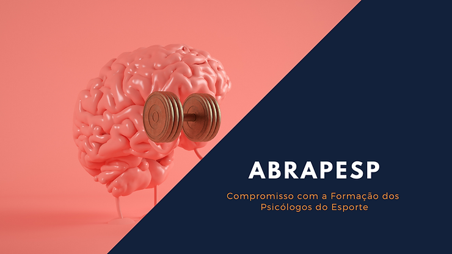
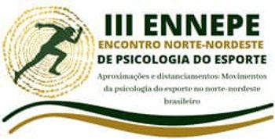

A ABRAPESP tem como uma de suas principais missões, facilitar o acesso ao conhecimento sobre Psicologia do Esporte, auxiliando na formação de futuros psicólogos, psicólogos que atuam ou desejam atuar na área e ainda de outros profissionais que buscam conhecimento sobre temáticas psicológicas em contexto esportivos, para isso nós estamos constantemente envolvidos em construções de eventos que levam a Psicologia do Esporte para todos os cantos do país.

Em novembro de 2020, estivemos apoiando e colaborando com o III Encontro Norte-Nordeste de Psicologia do Esporte (ENNEPE), que foram 3 dias intensos de muito compartilhamentos e potentes reflexões.
O ENNEPE tem sua história entrelaçada com a ABRAPESP desde seu início. Sua primeira edição aconteceu em 2016, em São Luís-MA, e teve apoio da ABRAPESP, que enxergou a necessidade de descentralizar a Psicologia do Esporte, fomentando espaços de formação, articulação e trocas profissionais nas mais diversas regiões do país.
Em 2018, aconteceu a sua segunda edição, em Fortaleza-CE, e mais uma vez a ABRAPESP apoiou o evento, auxiliando em toda a organização, além da presença de diversos membros da gestão 2018-2019 em suas atividades.
Em 2020, estava previsto para acontecer em Manaus-AM, marcando presença no Norte do país. Devido à pandemia causada pelo COVID-19, o evento se deu de modo online, mas organizado por profissionais e estudantes desta cidade, sob liderança do psicólogo Matheus Vasconcelos. Nessa edição, novamente a ABRAPESP foi grande apoiadora e teve a comissão científica do evento coordenada pela vice-presidente da gestão 2020-2021, Profa. Dra. Erika Höfling Epiphanio, além da forte presença da diretoria em diversas atividades.
Ao longo desta trajetória do ENNEPE houve um significativo aumento no número de participantes. O III ENNEPE contou com mais de 250 inscritos, das mais diversas regiões do país, sendo que ações como essa causam repercussão direta na ABRAPESP, desde o crescente número de participantes nos congressos nacionais, seja de estudantes ou de profissionais das regiões norte e nordeste, além de que, atualmente, a diretoria da ABRAPESP é composta por 50% de membros que representam o Nordeste e em suas comissões mais de 50% são de profissionais na região Norte-Nordeste.
O mais importante de tudo isso é perceber que a Psicologia do Esporte está crescendo nesta região com qualidade. As discussões promovidas durante os três dias de evento (III ENNEPE) foram encantadoras. A programação contou com profissionais de várias regiões do país: foram 14 conferências gravadas (nomeadas como balaios, em referência à cultura da região do Amazonas) com temas variados como: neurociências, preparação psicológica, psicologia do esporte na arbitragem, avaliação psicológica, entre tantos outros. Houve 9 mesas que foram realizadas de modo online, que possibilitaram potentes debates sobre a Psicologia do esporte na região Norte-Nordeste, bem como em todo o país, em uma programação extensa nomeada como Caminhos do Rio, em homenagem aos potentes rios que cortam e banham a região. Ainda, o evento contou com lançamento de livros e apresentação de trabalhos de estudantes e profissionais que compartilharam suas pesquisas e experiências.

O III ENNEPE ficou na história da Psicologia do Esporte, como um evento de resistência que, apesar de todas as dificuldades decorrentes do período complexo em que estamos vivendo, devido a pandemia, tornou possível unir profissionais de diversas regiões do país e construir novas possibilidades e olhares em torno da psicologia do esporte em âmbito nacional. Saímos desta experiência convictos de que a Psicologia do Esporte no Brasil tem sido feita de forma ética, justa, respeitosa e com qualidade.
E 2021 mal começou e a ABRAPESP entra com tudo, oferecendo mais conhecimento sobre a Psicologia do Esporte.
Pela primeira vez na história da ABRAPESP, está sendo lançado Cursos de Verão. São 6 cursos construídos em parceria com instituições internacionais, com profissionais renomados no Brasil e em Portugal, com temáticas diversas e extremamente atuais. Confiram no nosso site: nosso site
E para já dar um gostinho de que tem muito mais Psicologia do Esporte por vir, já deixo aqui a dica: 2021 vai ter Congresso ABRAPESP, logo teremos mais informações.
É só ficar ligado, que a ABRAPESP ainda tem muita informação, para melhorar a formação de quem quer pesquisar, conhecer e fazer Psicologia do Esporte!